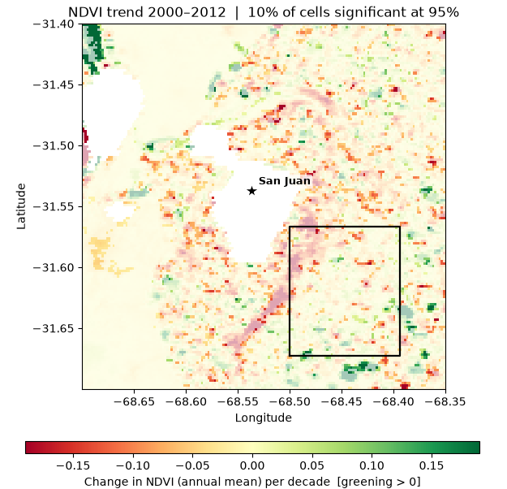

Acquire
MODIS/Terra MOD13Q1 Version 6.1 NDVI and pixel-reliability data from NASA AppEEARS.
NASA SPACE APPS CHALLENGE · 2026
Detecting vegetation change in San Juan, Argentina, with NASA MODIS satellite data.
Download full project report↓Earth Trend Detective is an interactive Python tool that analyzes long-term changes in vegetation greenness. It maps the direction and magnitude of NDVI trends, tests their statistical significance, and lets users inspect selected regions through time series and complementary trend estimates.
The map below is the project's supplied NDVI trend visualization. It shows the spatial pattern, the San Juan reference marker, and the selected analysis window.

This image is a visualization supplied with the project. Its displayed window is 2000–2012; the full project report describes the broader 2001–2025 analysis period.
MODIS/Terra MOD13Q1 Version 6.1 NDVI and pixel-reliability data from NASA AppEEARS.
Pair rasters by date, check alignment, apply the scale factor, and filter unreliable observations.
Summarize 16-day composites into annual mean or annual peak NDVI values.
Estimate trends with OLS, Theil–Sen, and Mann–Kendall; apply false-discovery-rate correction.
FULL TECHNICAL REPORT · 8 PAGES
Study area and data, methodology, statistical significance, tool design, results, limitations, future work, and references.
Download project report ↓BUILT FOR
Earth science · Open data · Open-source tools
NASA and NASA Space Apps Challenge are acknowledged as data providers and challenge organizers. This project is independently developed by GEASS Team and is not an official NASA product or endorsement.